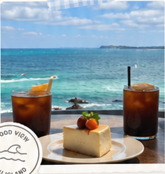

PINTRIP MVP · DESIGN HANDOFF
Import Link + Analyze Result
單一畫面、單一套元件：下方所有 viewport 與 UI state 都由同一份 markup 依 preview controls 切換，不是各自獨立的靜態畫面。390px 為視覺基準；App Shell（BottomNav、FAB、safe area、捲動規則）沿用最新 Home Screen handoff。畫面最上方的時間、訊號、Wi-Fi、電量與 Dynamic Island 僅屬 mockup，不是產品 UI。
SOURCE OF TRUTH — 敘述衝突時的優先順序
依問題類型判斷來源，不用單一全域順序。 產品行為與驗收條件：docs/MVP.md → docs/ARCHITECTURE.md。 Import 畫面與互動：本輪明確標示為已確認的決定 → 本檔 ImportScreen.dc.html → Design System 中確實適用的共用元件與 token。 共用視覺與 App Shell：HomeScreen.dc.html 的 App Shell／BottomNav／FAB／safe area／響應式框架 → Design System。
HomeScreen 只作為共用 App Shell 與視覺基準，不得用 Home 專屬畫面規則覆蓋 Import。MvpMockups.dc.html 僅早期 visual reference，不得用來推導或覆蓋正式規則。既有 ImportScreen 若與 MVP 或 ARCHITECTURE 衝突，修改的是 ImportScreen。
適用範圍：上述優先順序僅適用於 claude-design-export 內部的視覺與 handoff 敘述。產品範圍與產品規則以 docs/MVP.md 為準，技術決策與資料邊界以 docs/ARCHITECTURE.md 為準；設計檔不得凌駕這兩份文件。
VIEWPORT
STATE


{{ screenLabel }}
{{ frameMeta }}
目前預覽的規格重點
Gutter{{ specGutter }}
照片欄{{ specPhoto }}
狀態說明{{ specState }}
CTA{{ specCta }}
BottomNav{{ specNav }}
上方的 viewport 與 state 控制項、以及 Tweaks 面板的 previewWidth / previewState / showSpec / showDecor，切換的是同一份 markup 與同一組正式元件；沒有任何狀態被複製成獨立畫面。
SPEC
Import Screen Design Handoff
STATE MAPPING TABLE
左欄全部是 UI preview variant，不是資料狀態。正式 Import lifecycle 只有 received · processing · needs_input · review_required · completed · failed（docs/MVP.md §5.5 · ARCHITECTURE §6.1）。本表與畫面行為由同一份 STATES 資料產生，因此不可能出現表與行為互相矛盾。
STATE
LIFECYCLE
IMPORT
ENTRY
URL
來源元件
顯示
允許的主要動作
禁止
{{ row.name }}
{{ row.life }}
{{ row.created }}
{{ row.entry }}
{{ row.url }}
{{ row.src }}
{{ row.show }}
{{ row.can }}
{{ row.no }}
COMPONENT TREE
ImportScreen
ImportHeaderIconButton 44 · Wordmark script 40 · 信封貼紙
ScreenIntro「匯入連結」+ 說明（Instagram 貼文與 Reel 兩種來源）
TargetCollectionRow目標旅行收藏（分析前即已選定）+「更換」入口
LinkInputSection只用於尚未建立 Import 的 composer：LinkInput + inline validation + Analyze CTA。Import 建立後整段不再掛載
LinkInputIG icon · input · clear 按鈕
FieldErrorinvalid 時才佔位
Button primary分析連結 / 分析中…
AnalyzeStatus固定 24px 佔位；idle 空白不塌陷
arrow-curvesuccess 時一枚手繪箭頭
NoticeCardempty（MVP §5.5 needs_input）／error（failed）共用 dashed 卡：標題 + 說明 + 出口列
ExitStackflex column gap 10：補充資料後重試（primary 48）· 重新分析（outline，僅 error）· 沒有可用地點，結束處理（outline，僅 empty）· 換一個連結（文字鍵 44）
EndImportConfirm卡內就地確認列：兩行影響說明 + 取消（solid，flex 1.35）／結束處理（outline，flex 1），sm 44
SupplementPanel卡內展開（不開 sheet、不新增路由）：1px dashed 分隔 + 五個欄位 + 提交 + 取消補充
SupplementField ×4貼文文字（textarea 78）· 店名或景點名稱（46）· 地址或區域（46）· 其他有助於辨識的資訊（textarea 66）
ShotSlots貼文截圖：76×76 槽 ×n + dashed「＋新增」槽（gap 8，同一列）；每槽右上 ✕ 44 點擊區
SourceRow（persisted Import）Import 一旦建立就取代 LinkInputSection（不分 entry=new 或 resume）：IG 24 + 小標「來源貼文（唯讀）」+ 單行截斷 URL +「開啟」44。唯讀且無 Clear——改連結等於另一筆 Import（§5.3 · ARCH §3.3）。所有持久狀態共用這一個元件，不為各狀態複製 markup
ResumeSummaryRow狀態 chip（排隊中／待處理／已完成）+ 匯入時間（相對時間）。review_required 再加候選數 · 未處置數；completed 只加已加入數 · 已拒絕數（候選數可推導，不重複）。失敗原因與待補充資訊仍走 NoticeCard，不重複
CompletedSummaryCardcompleted 的唯讀摘要（entry=new 與 resume 都用），取代 BatchAddPanel + commit CTA 的位置；有加入／全拒絕兩套文案
ResultListflex column gap 16
ResultCardSlot ×n裝飾 wrapper（relative）
Tapeabsolute · aria-hidden · z-index 2
PlaceResultCardreview_required 的逐項處置狀態（Edit／拒絕／加入，added 只換標籤）；completed 時 readOnly 換成處置標示列
photo frame（非獨立元件）PlaceResultCard 內建的 photo treatment：5px 白框 + r6 + sticker shadow，不是可獨立引用的 PhotoFrame
PlaceCardMark卡內唯一 mark slot（markSrc）；variant 由 category 決定
AddFailureNotice批次部分失敗時的卡內單一責任區塊（role="status"），Tags 下、動作列上；不是另一種卡片版型
DispositionRow（completed）取代動作列的靜態處置標示，無按鈕；min-height 44 使卡高不變
BatchAddPanel只存在於 review_required，數量由「已匹配且尚未處置」推導；全數處置完即 completed，改由 CompletedSummaryCard 承接
Button action全頁唯一 commit；只在有「已匹配且尚未處置」項目時存在，completed 不出現，重試中原生 disabled
AppShell（共用）BottomNav + FabButton，與 Home 同一元件
SoftKeyboardmockup-only，系統鍵盤佔位
mockup-only：狀態列（時間／訊號／Wi-Fi／電量／Dynamic Island）與軟鍵盤都不進產品程式。
LAYOUT / SPACING
Frame390 × 844（基準）
Gutter16 / 20 / 24
內容區上緣8px + header 6px
Back button44 × 44（點擊區下限）
Wordmark高 40px，靠右
信封貼紙52px, rotate(4°), 貼 wordmark 右側 gap 6
Header → 標題14px
標題字級26px Quicksand 700
說明文字13px / 1.6，max-width 304px
標題 → 目標收藏列16px
TargetCollectionRow滿寬 · 高 64（實測）· r14 · padding 10 / 10 / 10 / 14 · 陰影 0 4 14 rgba(122,96,58,.07)
小標 / 名稱11px Quicksand 700 .1em / 17px Playfair 500；pin 13px、gap 5
名稱長度｜實測回報名稱列為 white-space:nowrap + overflow:hidden + text-overflow:ellipsis + min-width:0（min-width:0 必須寫在最內層 span，否則 flex item 不會縮到比內容窄，ellipsis 永遠不觸發）。可用文字欄寬實測 230 / 252 / 284px（360／390／430）。以 23 字（intrinsic 391px）壓力測試：三個寬度都單行 ellipsis、列高恆 64px、與「更換」保留 12px 淨距、無水平溢出。「更換」為 flex-shrink:0，永不被名稱擠壓。收藏名稱是否設字數上限尚未決定（docs/MVP.md §5.2）；版面已能安全處理任意長度，不得以版面限制反推產品字數上限
更換按鈕14px Quicksand 600 · 點擊區 44 × 44
無收藏引導卡同 NoticeCard：r20 · 1.5px dashed · padding 20 / 18 · outline 動作 40px
SourceRow（persisted）上距 14 · 高 64（實測，三個寬度與所有持久狀態相同）· r14 · padding 10 / 10 / 10 / 14 · IG 24 · URL 單行截斷（min-width:0 + ellipsis）·「開啟」點擊區 44 · role="group" aria-label「這筆匯入的來源貼文（唯讀）」
ResumeSummaryRow只在 entry=resume 出現 · 與 SourceRow gap 10 · 高 46（實測，三個寬度與所有 resume／completed 狀態相同，meta 恆單行）· r14 · padding 11 / 14 · chip 11.5px r999 · meta 12px
失敗提示區（卡內）上距 12 · padding 10 / 12 · r12 · 底 coral-100 · 12.5px / 1.55 · 標籤 Quicksand 700 coral-600 + 全角空格（失敗「加入失敗」／重試中「重試中」） · 高 79 / 60 / 60（實測；360 為 3 行）
處置標示列（completed）取代動作列：上距 12 · min-height 44（與動作列等高，卡高不變）· ✓／✕ 15px + 標籤 13.5px Quicksand 700 · 已加入 blue-500／已拒絕 ink-400 · 無按鈕
§5.10 欄位界線§5.10 的「解析出的候選地點數量」是匯入紀錄頁（/imports）的需求，本次不設計。ResumeSummaryRow 是單一匯入的狀態列，並非§5.10 的實作面；completed 省略候選數不影響§5.10 的滿足，不得讀作漏做
匯入時間格式｜設計假設7 天內用相對時間（「3 小時前」「2 天前」）· 超過 7 天改絕對日期且不含時分（「8 月 26 日」）。時間格式與 7 天門檻為設計假設，MVP.md 未定義（§5.10 只要求「匯入時間與狀態」）；時分屬 /imports 列表頁需求，本次不設計
來源區塊三種形態composer 118（欄位 52 + gap 12 + CTA 54）→ 僅 SourceRow 64（−54；entry=new 的持久狀態）→ SourceRow + 摘要列 120（+2；entry=resume）。三個寬度完全相同，無例外
CompletedSummaryCard上距 20 · 高 106（實測）· r20 · padding 18 / 18 / 19 · 標題 15.5 / 內文 12.5
NoticeCard 出口列上距 15 · gap 10 · Button md 48 滿寬 · 文字鍵 44
結束處理確認列上距 15 · 上 padding 14 · 1px dashed #EDE4D2 · 說明 13／12 · 按鈕列上距 13 · gap 8 · sm 44
補充區上距 15 · 上 padding 14 · 欄位群 gap 14 · label 11px .1em 下距 6
欄位單行 46 · 貼文文字 78 · 其他資訊 66 · r12 · 1.5px #E3D9C6 · 底 #F9F5ED · 13px
截圖槽76 × 76 · r12 · gap 8 · 刪除 ✕ 22px 圖形／44 × 44 點擊區（top:-6 right:-6，僅向上向右各溢出 6px，與右鄰槽留 3px 淨距，不跨到隔壁截圖；實測 390 槽 95–171／179–255／263–339，✕ 點擊區 132–176／216–260／300–344，360 與 430 同樣 3px 淨距）· 新增槽 1.5px dashed #C4D8EF
提交 / 取消補充primary md 48 滿寬 · 文字鍵 44 · 兩者 gap 8
目標收藏列 → LinkInput14px
LinkInput滿寬 · 52px · r14 · padding 0 12 0 14
IG icon / clear24px / 24px（點擊區補到 44）
錯誤訊息欄位下 8px，12px / 1.55
LinkInput → CTA12px
Analyze CTA滿寬 · 50px · r14
CTA → 狀態列20px
狀態列高度min-height 24px（idle 也保留）
狀態 → 卡片群16px
結果卡片間距16px
卡片 padding / 圓角12px / 20px
卡片陰影0 4px 14px rgba(122,96,58,.07)
照片欄108 / 120 / 132 × 122 / 136 / 150
照片白框5px + r6 + sticker shadow（PlaceResultCard 內建，非獨立 PhotoFrame 元件）
卡內動作列滿寬（跨照片欄 + 文字欄）· 上距 12px · gap 8 · Edit 1 : 拒絕 1 : 加入 1.35
卡片 → Batch 面板20px
Batch 面板padding 16/14 · 1.5px dashed · r20
Batch → commit CTA12px
內容底部留白72px（+ safe-area inset）
BottomNav / FAB72px / 60px, 上凸 14px
RESPONSIVE RULES
Breakpoint 變數只有兩個：gutter（16/20/24）與照片欄（108/120/132）。其餘完全共用
FixedBottomNav 72、FAB 60 + 上凸 14、Back 44、Wordmark 40、信封 52、IG icon 24、clear 24、輸入框 52、CTA 50、Batch commit 50、目標收藏列高 64 與 pin 13、更換點擊區 44、所有裝飾
Fluid內容寬、LinkInput 寬、SourceRow 寬、兩顆 CTA 寬、卡片寬、文字欄寬、Batch 面板寬、失敗提示區寬、目標收藏列寬（名稱欄吸收寬度，單行 ellipsis；可用 230／252／284）
Photo ratio固定 0.88（108/122 · 120/136 · 132/150），cover + center
Text : image三個寬度都約 62:38（實測 184:108 · 194:120 · 214:132）；文字欄恆 ≥ 184px
Headerspace-between 一列；左右都是固定尺寸，只有中間空隙變化，三個寬度排列相同
說明文字max-width 304px，430 不跟著拉寬（避免單行過長）；360 允許換到三行
允許換行說明文字、地址（最多 2 行）、Tags（wrap 多行）、Batch 面板標題
Line clamp地點說明 2 行、地址 2 行；地點名稱單行 ellipsis（DS 已內建）
360 可讀性字級一律不縮；先縮照片欄與 gutter，再讓 Tags 換行，最後才靠 clamp
430 不過寬照片欄放大吸收多餘寬度、說明文字設上限、Tags 仍照原字級不放大
不做的事不換卡片版式、不改欄位方向、不因寬度隱藏任何元素
UI STATE TABLE
No collection依據 docs/MVP.md §5.3 明文：「使用者尚未建立任何旅行收藏時，不能建立匯入…必須先引導使用者建立旅行收藏…已貼上或由分享帶入的網址在此期間必須保留」（2026-08-27 回寫，不再是推導）。目標收藏列換成 dashed 引導卡 +「建立旅行收藏」outline（導向 /trips/new，不在頁內建立）；欄位保留分享或已貼上的 URL 且仍可編輯，CTA disabled；無狀態列、無結果區
Idle空欄位、CTA disabled（45% 不變色）、狀態列保留 24px 空間、無結果區；結果區位置改放 IdleHint（次要層級、無 CTA、無邊框，一有輸入即移除）
Filled有值 → clear 按鈕出現、CTA enabled；長 URL 於輸入框內水平捲動，不換行、不縮字
Reel URL已定案｜/p/ 與 /reel/ 同為有效來源格式（docs/MVP.md §5.3、ARCHITECTURE 決策表）。Reel 連結通過格式驗證、CTA enabled，與 Filled 同一份版面、同一顆 CTA，不另做欄位或分支。placeholder 改為「instagram.com/p/… 或 /reel/…」。Reel 的文字來源優先取可取得的 caption／Share Target 文字或分享附帶文字，MVP 不要求取得或分析影片本身（ARCH §3.4）
來源唯讀｜跨狀態規則URL 只有在 Import 尚未建立的 composer 階段可編輯（No collection／Idle／Filled／Reel URL／Invalid／四種 Keyboard）。一旦進入 received 之後的任何狀態，來源一律以 SourceRow 唯讀呈現：不用可編輯 input、不出現 Clear、不能改寫本筆 Import 的 URL，畫面 URL 與實際處理來源永遠一致（§5.3 · ARCH §3.3）。要分析其他連結＝離開本筆 Import，建立新的一筆
Analyzing＝ lifecycle processing。Import 已建立，因此 LinkInput 與 Analyze CTA 一併換成唯讀 SourceRow：沒有可編輯欄位、沒有 Clear、也沒有可重複按的 CTA（重複提交在此不可能發生）。狀態列「正在讀取這則貼文…」＋ sparkle 1400ms opacity 1→.5 脈動，prefers-reduced-motion 時關閉。來源區塊由 composer 118px 收成 64px，三個寬度一致；實測捲動層 736px，不需捲動
Success＝ lifecycle review_required。SourceRow 唯讀 + 狀態列「分析完成！找到 N 個地點。」+ 手繪箭頭；結果卡片（逐項 Edit／拒絕／加入）、Batch 面板、珊瑚 commit CTA。實測捲動層總高 1399／1371／1339，最後的 commit CTA 距 nav 上緣 72px、距 FAB 頂 58px
Empty result（零候選）needs_input 的第二種來源：讀到內容但解析不出地點。三個出口都在，順序為換一個連結（primary）→ 沒有可用地點，結束處理（outline）→ 補充資料後重試（文字鍵）。來源列維持唯讀，不因失敗而變回可編輯欄位。實測卡高 289（三個寬度相同），捲動層 736px 不需捲動
needs_input · 資料不足needs_input 的第一種來源（MVP §5.5「資料不足」／ARCH §6.1「資料不足／零候選」）：來源內容根本讀不到。同一個 NoticeCard 版面、不同文案，出口順序改為補充資料後重試（primary）→ 換一個連結（outline）→ 沒有可用地點，結束處理（文字鍵）。實測卡高 360:310 · 390／430:289
Received（排隊）與 processing 共用版面，只換文案「已收到連結，排隊處理中…」；Import 已建立 → 來源唯讀、沒有 Analyze CTA、無結果區。不做第二種版面——兩者對使用者的下一步相同（等待），多一種版面會製造沒有動作差異的狀態
Resume · review_required回到未處置完的匯入（entry=resume，/imports/:importId/review）：SourceRow 唯讀 + ResumeSummaryRow 取代 LinkInput 與 Analyze CTA；狀態列改持久文案「上次分析找到 3 個地點，還有 1 個沒處置。」；結果列表回填已加入／已拒絕／未處置，Batch 只計未處置。來源區塊三種形態（三個寬度完全一致）：composer 118（欄位 52 + gap 12 + CTA 54）→ 僅 SourceRow 64（−54，entry=new 的持久狀態）→ SourceRow + 摘要列 120（+2，entry=resume；64 + gap 10 + 46）。ResumeSummaryRow 只在 entry=resume 出現，entry=new 的持久狀態不顯示「2 天前匯入」這類回訪語
Resume · received回訪時該筆匯入還在排隊：SourceRow + 摘要列（狀態 chip「排隊中」、「還沒開始分析」），狀態列排隊文案，無結果區。這是「排隊中」對使用者唯一有意義的地方——它說明可以先離開
Completed · 有加入從匯入紀錄回訪（entry=resume）：只要至少一筆已加入即屬此類，包含部分加入 + 部分拒絕。ImportItem 是唯讀處置紀錄——卡內不提供 Edit／Add／Reject／Retry／重新搜尋／補充資料，動作列整條換成靜態處置標示；「更換」原生 disabled；無 commit CTA。要修改已加入地點的內容，寫入對象是 TripPlace，不得回頭改寫 ImportItem（§5.5 · §5.7 · ARCH §6.2 / §10）。摘要卡「已加入 N 個地點到「{收藏}」」，實測摘要卡高 106、摘要列 46、卡片 255／227／230、捲動層 1400／1372／1353。meta 不列候選數：§5.5 定義 completed 為「所有候選項目都已確認或拒絕」，因此此狀態候選數恆等於已加入數 + 已拒絕數，列出等於把前兩者的和再印一次——砍掉不損失資訊，且 360 因此收回單行（resume 區塊三個寬度一律 134，+2，無例外）。此推導只適用於 completed；review_required 的未處置數無法由其他欄位推得，候選數與未處置數都必須保留
Completed · 全部拒絕同一版面、不同文案：「這則貼文沒有地點被加入」+「N 個候選都拒絕了，這筆匯入已結束。之後仍可重新貼上同一連結，建立一筆新的匯入。」不用「已完成」作收尾——沒有任何地點被加入時那是誤導。所有卡片同為唯讀（✕ 已拒絕），不提供取消拒絕。實測摘要卡 106、捲動層 1400／1372／1353
Supplement · 空 / 已填 / 由 error補充資料在卡內就地展開（五種內容 + 截圖）。空欄位時提交 disabled 45%；任一欄位有值即 enabled。實測 NoticeCard 總高：空 360:823 · 390／430:804；已填（3 張截圖 + 文字 + 店名 + 區域）360:849 · 390／430:829；補充區本身 694／674／674。360 下需捲動兩屏（捲動層總高 空 1324／1304／1304、已填 1349／1330／1330，可視 736），屬選擇頁內展開時已接受的取捨
End import confirm出口列原地換成確認列（取消 solid 1.35／結束處理 outline 1）；文案寫明影響範圍且不寫「不可復原」。實測卡高 244（三個寬度相同）
Invalid URL欄位邊框轉珊瑚 + 3px 柔光、inline 訊息點明只支援 Instagram 貼文（/p/）與 Reel（/reel/）；輸入內容保留、CTA 原生 disabled。只有三種情況算 invalid：非 Instagram 網址、不屬於 /p/ 或 /reel/ 的 Instagram 路徑、網址格式不完整。合法的 /p/ 或 /reel/ 網址因私人帳號、需要登入、內容已移除、來源存取限制或讀不到 caption 而失敗時，一律不得顯示為 invalid，必須建立 Import 並進入 needs_input 引導補充（§5.3 明文）
Error＝ ARCHITECTURE §6.1 的 failed，只能重新嘗試回 processing，不提供結束處理（§6.1 只有 needs_input 有往 completed 的轉換）。出口：補充資料後重試（primary）· 重新分析（outline）· 換一個連結。URL 不清除；不用大型警告圖示。實測卡高 289
Mixed disposition部分加入 + 部分拒絕 + 部分未處置：三種卡片狀態同時存在；Batch 標題只數未處置，副標補「已拒絕的 N 個不會加入」；CTA 保留。仍有未處置 → 維持 review_required，卡內動作全數可用
Batch partial failure批次加入採部分成功，不是全成全敗（docs/MVP.md §5.7 · ARCHITECTURE 決策表）。示範：批次 3 筆 → 2 成功、1 失敗。成功的 2 筆立即顯示已加入且不回滾；失敗的 1 筆維持尚未處置，絕不顯示為已加入；Import 維持 review_required。失敗卡內出現一塊單一責任的失敗提示區（coral-100 底、r12、12.5px、
role="status" aria-live="polite"），位置在 Tags 之下、動作列之上——不是 overlay、不壓縮動作列、不與下一張卡重疊。重試入口＝原本的「加入」鍵（不新增第四顆按鈕，動作列 360 寬度預算已用盡），其 aria-describedby 指向失敗提示，aria-label 改「重新加入旅行收藏：{地點}」。Batch 面板重新計算：標題「還有 1 個地點沒加入成功」、副標「已加入的 2 個會留在「{收藏}」，不會因為這次失敗被移除。」、CTA「重試加入 1 個地點」、無 sparkle。實測失敗卡 346／327／302（比同一張成功卡 +91／+72／+72，失敗區 79／60／60 + 上距 12），捲動層 1486／1439／1419，無水平溢出
Batch retry（重試中）重試進行中：失敗提示區整段換成重試語——前綴由「加入失敗」改「重試中」、內文改「正在重新加入…」（前綴不可留著，否則 live region 會一口氣念出「加入失敗 正在重新加入」互相矛盾），「加入」鍵與 Batch CTA 都用原生 disabled（opacity .4 / .45，位置與尺寸不變）防重複提交，Batch CTA 文案「正在加入…」。已加入的卡片不受影響。實測失敗卡 307／307／282（單行提示，比 batch-fail 收回 39／20／20），捲動層 1447／1419／1400
All processed＝ lifecycle completed，entry=new：使用者仍停留在本次 Import，部分加入、部分拒絕、沒有未處置項目。所有結果卡轉唯讀處置紀錄（不留 Edit／Add／Reject／Retry，動作列換成 ✓ 已加入／✕ 已拒絕靜態標示，仍佔 44px，卡高不變）；BatchAddPanel 與珊瑚 commit CTA 一併由 CompletedSummaryCard 取代；「更換」原生 disabled。實測卡高 255／227／230、摘要卡 106、捲動層 1344／1316／1297
Match · 待選 / 展開 / 未匹配三個可切換 state。待選：地址列換成「請選擇實際地點 · 3 筆候選 ›」、加入 disabled、拒絕仍可用。展開：候選清單原地展開 + 末列「重新搜尋」。未匹配：地址列換成「找不到對應的實際地點」+ 滿寬「重新搜尋」。狀態列補「找到 3 個地點，1 個要選地點。」（360 實測單行 24px，未撐高）；Batch 面板 CTA 只計已匹配的未處置項目（360 實測標題 2 行 + 副標 1 行，共 3 行）
Reject confirm第一張卡的動作列換成確認列（兩行說明 + 取消 solid／拒絕 outline）；其餘卡片不變、Batch 面板計數不變（尚未處置）；該卡增高 +53px、其下卡片同步下移，屬明列例外，見 PLACE RESULT CARD
All rejected＝ lifecycle completed，entry=new，三筆全部拒絕。卡片唯讀、留在原位與原排序（✕ 已拒絕），不提供取消拒絕（§5.7 明訂 MVP 無此入口）；CompletedSummaryCard「這則貼文沒有地點被加入」+「3 個候選都拒絕了，這筆匯入已結束。之後仍可重新貼上同一連結，建立一筆新的匯入。」；無 commit CTA、無 sparkle
Partial added已加入卡片原地不動、Add 換成「✓ 已加入」；Batch 標題與 CTA 只數未加入的地點
All added＝ lifecycle completed，entry=new，三筆全部已加入。與 All processed 同一版面與同一套唯讀規則，只有摘要卡文案不同。舊作法「Batch 面板改完成語」已作廢——全部處置完即進入 completed，BatchAddPanel 本身就不該存在，改由 CompletedSummaryCard 承接；無 confetti
Keyboard openBottomNav 隱藏、鍵盤佔位、欄位與 CTA 皆在可視範圍；空 / 有值 / 長 URL / 長 Reel URL / invalid 五種都可切換。鍵盤只出現在 composer 階段（持久 Import 沒有可編輯欄位，也就沒有鍵盤狀態）。實測捲動層 601px、三個寬度都不需捲動、無水平溢出
Extreme長名稱、長地址、長類別、兩行 Tags、5 張卡片、混合已加入狀態
共通狀態切換只換內容，header／欄位／CTA 位置永不移動；元件與間距全部共用
PLACE RESULT CARD
容器padding 12 · r20 · #FFFDFA · 單層暖陰影 · 無邊框 · overflow:hidden
兩欄照片欄 flex-shrink:0；文字欄 flex:1 + min-width:0；gap 12
Photo108/120/132 寬、ratio 0.88、最小 108×122；5px 白框 + r6 + sticker shadow
object-fit / positioncover + center；照片高度固定不隨卡片拉伸，因此不需 aspect-ratio
Category badgeflex-shrink:0，永遠在名稱右側同列；長類別標籤時名稱先 ellipsis，badge 不換行
Place name18.5px Quicksand 700，單行 nowrap + ellipsis（不 clamp 兩行）
Description13px KR / 1.6，line-clamp 2，右側留 16px 給邊緣小記號
Mark slot卡片 relative 容器內 right:10 top:46（badge 下方 16px），20×20；三個 viewport、所有 state、任何文字長度都同一組數值，不遮 title／description／address／tags／actions
AddressGoogle Maps 對應地址，12.5px + 藍 pin；line-clamp 2，pin flex-shrink:0
Tagsflex-wrap gap 5，允許兩行以上；不縮字、不裁切、不橫向捲動
Tags｜規範來源標籤已由 docs/MVP.md 定義：§5.6 列入 AI 辨識欄位、§5.7 列入可編輯欄位、§5.8 列入正式收藏保存欄位（2026-08-27 回寫）。保留呈現：移除 tags 與其上方虛線後，三個寬度的每一張卡都落回照片決定的下限（202／216／230），卡高不再隨內容變動，文字欄底部留 17／31／45px 空白
不在本卡呈現的欄位推薦品項 · 城市或區域 · 辨識信心程度三項都不呈現（依據見 PRODUCT DECISION 盒）。若要加，實測代價：各為一列 12.5px 文字，+27／+27／+24px；三項全加後三個寬度一律 280px，長內容卡由 301 升到約 328，360 下首屏可見卡片從 2.5 張降到 2 張
分隔線Tags 上方 1px dashed cream，margin 11/10
動作列滿寬橫跨照片欄與文字欄，位於卡片下半、上距 12px、gap 8；三個動作：Edit（outline，pencil + 「編輯」，flex 1）: 拒絕（outline 純文字、無圖示，flex 1）: 加入（solid + ＋／✓，flex 1.35）。動作列不再位於文字欄內，因此不受文字欄寬度限制。按鈕高 44px（Button sm 由 40 提高到 44，對齊本頁四處寫明的點擊區 ≥44 下限；sm 僅由 PlaceResultCard 內部使用——動作列 3 顆、確認列 2 顆、重新搜尋 1 顆，故直接改 DS token 而非 per-usage 覆寫）
動作列寬度預算Button sm 為 13px 字 + padding 0 10 + icon gap 5，whiteSpace:nowrap 不可壓縮，實際寬度由內容決定而非 flex 比例。滿寬後 360 可用寬 304px（卡片 328 − padding 24）：終態（✎ 編輯／已拒絕／✓ 已加入）實測 88 + 88 + 111 + gap 16 = 303px，剩 1px。餘裕已用盡——再加第四個動作或加長任一終態文案都會溢出，拒絕鍵仍不得帶圖示
Added按鈕留在原位，僅 + → ✓、文案改「已加入」，尺寸與版位不變；拒絕與 Edit 轉 disabled 45%（不移除）。已處置的候選不再提供修改與拒絕入口。此規則只適用於 review_required；Import 進入 completed 後整條動作列不存在（見「completed｜唯讀處置紀錄」）
Rejected同一原則：拒絕鍵原位、文案改「已拒絕」（維持無圖示，見動作列寬度預算），底色轉 cream-200 + ink-400 文字並轉 disabled（復原入口 PENDING，不留未定義的再點擊）；加入與 Edit 轉 disabled 45%，卡片照片與文字不變、不淡出、不移除
Match slot（地址列）地址列升級為實際地點匹配槽，三種樣態：已匹配＝正式名稱地址 + blue pin（有候選時右端 ›，整列 44px 點擊區）／待選擇＝「請選擇實際地點 · N 筆候選 ›」／未匹配＝地址列換成「找不到對應的實際地點」，卡片下半滿寬「重新搜尋」outline（實測卡片高 360:301）。MVP 核心原則 4：只有匹配到實際地點的項目才能成為正式收藏
候選清單（卡內展開）點地址列後在卡片下半滿寬展開（與動作列同一欄）：每筆 13px/700 正式名稱 + 12px 地址、單選記號、列高 ≥44、r12 邊框（選中轉 blue-400 + blue-050），末列固定滿寬「重新搜尋」（sm，高 44）。滿寬後每筆候選地址收在單行，實測卡片總高 360:507 · 390:479 · 430:479（未展開 255／227／230）。選定後收合、地址列換成該候選、Add 解除 disabled。不開 sheet：候選欄位（名稱／地址／城市／經緯度／地圖連結／外部 ID）一行半就放得下，且畫面已有一個形式未定的面（更換目標）
候選上限 3 筆｜設計假設OPEN — 不是產品或 API 上限：MVP.md 與 ARCHITECTURE.md 都未規定候選數量，且 ARCH §2.2 明訂地圖／Places 供應商不得預設，典型回傳筆數與排序品質未知。preview 裡的 3 筆只是設計測試資料，不得寫成「最多 3 筆實際地點候選」。超過 3 筆時的 UI（捲動／分頁／地圖預覽／升級為 sheet）尚未定義，待 Places API 與搜尋策略決定後重新檢視。與「每筆匯入最多選取 3 張補充截圖」是兩件事——後者已定案（§5.4），前者未定
三種匹配樣態的動作可用性（動作列改滿寬後版位改變、可用性規則不變）已匹配：Edit ○ · 拒絕 ○ · 加入 ○。待選擇：Edit ○ · 拒絕 ○ · 加入 ✕（disabled 45%）。未匹配：Edit ○ · 拒絕 ○ · 加入 ✕。拒絕在三種樣態下一律可執行——否則未匹配項目永遠停在未處置，Import 依 MVP §5.5 / ARCHITECTURE §6.2 就離不開 review_required
展開時的捲動展開後卡片實測 479–507px，靠近下緣時要避免把地點名稱與照片推出視野。沿用鍵盤那套作法：以容器 scrollTop 計算（不用 scrollIntoView），把「卡片頂端（名稱 + 照片）到候選清單末列」這一段對齊到可視區，上緣保留 16px 呼吸；若整段超過可視高度，優先保住卡片頂端
拒絕確認列按下拒絕後，整條動作列原地換成確認列：13px「拒絕後這個地點不會加入「{target}」。」+ 12px「拒絕不能復原。」+ 取消（solid 藍 flex 1.35）／拒絕（outline flex 1）。確認列同樣滿寬，360 可用 304px 只放兩顆鍵，比三鍵寬鬆許多，不觸發截斷；文案與按鈕配置不需調整。同時只有一張卡可處於確認狀態
確認列的版面位移｜明列例外確認列使卡片增高 +53px（sm 提高到 44 後實測 360:255→308、390:227→280、430:230→283；增量與 40px 時相同，因基準與確認列同時 +4；兩行說明在 304px 下各自單行），其下卡片整批下移同樣距離。這是使用者主動觸發的區域性展開，屬「狀態切換不改版面骨架／不產生 layout shift」原則的明列例外——該原則約束的是系統狀態驅動、使用者未預期的位移；主動展開的位移可預期且可用取消還原，照片欄、裝飾與卡片排序都不變
確認列的取消時機取消鍵、按下其他卡片的任何動作、該卡完全捲離可視範圍（IntersectionObserver ratio 0）才取消確認。不採位移門檻：px 門檻在不同螢幕與慣性捲動下不可預測，且使用者常會捲動去看確認影響的內容；「捲出視野」是明確、可實作、與意圖一致的邊界
completed｜唯讀處置紀錄Import 進入 completed 後（All added／All processed／All rejected／Completed 回訪），整條動作列被移除，換成靜態處置標示列：✓ 已加入（blue-500）／✕ 已拒絕（ink-400），min-height 44 與動作列等高，因此卡高不變（255／227／230）。不留任何看似可按但無效的控制——Edit、Add、Reject、Retry、重新搜尋、補充資料在此一律不存在（§5.5 · §5.7 · ARCH §6.2）。已加入地點的內容修改對象是 TripPlace，其路由與畫面不在本畫面範圍且尚未定案；已拒絕項目完成後不再提供編輯，也沒有取消拒絕
批次失敗提示區卡內單一責任區塊，不是另一種卡片版型：位置在 Tags 之下、動作列之上，上距 12、padding 10/12、r12、coral-100 底、12.5px/1.55，前綴「加入失敗」／重試中改「重試中」（Quicksand 700 coral-600，與內文同步切換，不留矛盾語）。
role="status" aria-live="polite" 且有 id，由該卡「加入」鍵的 aria-describedby 指向，失敗原因因此與卡片建立關聯。自適應高度（79／60／60 實測），不是 overlay、不遮內容、不壓縮動作列、不與下一張卡重疊。重試＝再按同一顆「加入」（不新增第四顆鍵，寬度預算已無餘裕）；重試中該鍵與 Batch CTA 皆原生 disabled
三態互斥每張卡只能是未處置／已加入／已拒絕之一；已處置的卡片留在原位與原排序
高度下限 = 照片高 + 12 + 44（動作列）+ 24（計算 360:202 · 390:216 · 430:230；390／430 實測相符，360 實測 206，差 4px 為行高進位）。實測 360：常規 255 · 最短 206（Extreme 的短內容卡）· 長內容 301（地址 2 行 clamp 生效後）；390：常規 227 · 最短 216 · 長內容 301；430：常規 230 · 最短 230 · 長內容 301。匹配樣態實測：待選 360:282 · 390:254 · 430:254；未匹配 360:309 · 390:281 · 430:284；展開 360:507 · 390／430:479。批次失敗卡 360:346 · 390:327 · 430:302（同一張成功卡 +91／+72／+72）；重試中 360／390:307 · 430:282。completed 唯讀卡與 review_required 常規卡等高（255／227／230）。Button sm 40→44 後，所有卡片一律 +4px，無其他版面變化（照片欄、gutter、文字欄寬、裝飾、排序都不變）
內容增長文字欄變高時卡片跟著長高，照片維持原高靠上；動作列永遠在卡片最下並滿寬，不再貼文字欄底部
360 空間不足依序：縮照片欄 → 縮 gutter → Tags 換行 → clamp；不改欄位方向、不換版式
430 過寬照片欄放大吸收；文字不放大、Tags 不放大、按鈕比例不變
DECORATION RULES
Container裝飾一律放卡片外層 wrapper（position:relative），不進 PlaceResultCard
Tape60–64 × 17px，top:-7，left 24/26/30，opacity .92，r2，跨過卡片上緣
Variation依 category 固定，不看 index：cafe 藍格紋 −8° · food butter +6° · attraction 淡紫點點 −5° · shopping／other butter +6°
EnvelopeHeader 內、wordmark 右側 gap 6，52px，rotate(4°)，全頁僅一枚
Curved arrow狀態列容器 absolute right:2 top:-8，36px；僅剛分析完成的 review_required 出現（success／partial／extreme）。completed 與批次失敗不出現——那不是值得慶祝的收尾
Sparkle（CTA）Analyze 按鈕內圖示，analyzing 時脈動；不是裝飾層，屬按鈕內容
Sparkles（Batch）面板右側 34px；批次失敗時移除（面板不慶祝失敗），completed 沒有 Batch 面板所以也不存在。素材已為真透明，multiply 只是元件內建的沿用值，不再是遮底手段
LuggageBatch 面板左側 52px，rotate(-4°) + drop-shadow
PlaceCardMark單一共用 slot（PlaceResultCard 的 markSrc）：variant heart／star／flower · size 20（預設）· aria-hidden · pointer-events:none · absolute 不參與文件流；三個圖案共用同一組定位，不各自寫 CSS
Mark variant依 category 固定：cafe 珊瑚愛心 · food 黃色星星 · attraction 紫色小花 · shopping／other 不傳 src 即不渲染
同一地點排序、added 狀態、三個 viewport、所有 state 都套同一組膠帶與小記號；視覺身份不因情境改變
Rotation−9° ~ +6°，同畫面不重複同角度
z-index膠帶 2（卡片之上、nav 之下）；卡內小記號沿用元件內層
Responsive位移一律固定 px，三個寬度不變；不用 % 定位，避免窄螢幕壓到名稱或 badge
互動全部 pointer-events:none + aria-hidden；不得作為狀態或資訊的唯一來源
Clippingwrapper 不可 overflow:hidden（膠帶會被切）；水平溢出由捲動層 overflow-x:clip 收
數量維持現況：Header 1 枚、狀態列 1 枚、每卡最多 1 條膠帶 + 1 枚小記號，不增加
MOBILE LAYOUT / SAFE AREA / SCROLL
Top safe areaenv(safe-area-inset-top)，內容再加 8px；不自繪狀態列
Bottom safe areanav 高 = 72px + env(safe-area-inset-bottom)，內容 padding 同步加 inset
BottomNav / FAB與 Home 完全同一元件與數值：72px、上圓角 26、FAB 60、上凸 14、5px 米色環
Scroll container唯一捲動層：flex:1; min-height:0; overflow-y:auto; overscroll-behavior:contain
Fixed狀態列區、BottomNav、FAB、（鍵盤開啟時）鍵盤；frame overflow:hidden
Content bottom pad72px + inset：最後一張卡、Batch 面板與 commit CTA 都能完整捲到 nav 與 FAB 之上
遮擋驗證｜實測捲到底後最後一個內容元素的下緣距 nav 上緣 72px、距 FAB 頂端 58px（FAB 60px，位於 nav 上方）。commit CTA 只存在於 review_required，因此以實際有 CTA 的 Success／Batch partial failure／Extreme × 360／390／430 共 9 組捲到底實測（scrollTop 已達底、餘量 0）：九組的 CTA 下緣間距皆為 nav 72px／FAB 58px，CTA 完整可見、未被 BottomNav 或 FAB 遮住。completed（All added／All processed／All rejected／Completed 回訪）沒有 commit CTA，量的是最後一張唯讀卡片。三個寬度、所有狀態的水平溢出量皆為 0px（捲動層與 frame 都是 scrollWidth − clientWidth = 0）
需要捲動的狀態可視高 736（鍵盤開啟時 601）。不需捲動：No collection／Idle／Filled／Reel URL／Invalid／received／analyzing／Empty／Error／End confirm／Resume 排隊中／五種 Keyboard（needs_input 資料不足在 360 為 756px，僅此一格需要微捲）。需要捲動：所有含結果列表的狀態與補充資料（實測 1250–1981）
z-index內容 0 · 膠帶 2 · nav 5 · FAB 6（nav 子層）· 鍵盤 7
Overscrollcontain；不做下拉裝飾，回彈交給系統
Horizontal捲動層 overflow-x:clip、卡片 overflow:hidden、文字欄 min-width:0，三者同時具備
KEYBOARD BEHAVIOR（正式方案）
聚焦 — 欄位邊框轉藍 + 3px 柔光，不放大、不位移；聚焦時不清空既有內容。
Visual viewport — App Shell 高度改跟 visualViewport.height，不用 100vh；鍵盤升起等於捲動層變短，header／欄位／CTA 的相對位置不變。
BottomNav — 鍵盤開啟時隱藏（不是被蓋住）。輸入是專注任務，nav 留著只會與鍵盤的「前往」鍵搶注意力，且會吃掉 72px 可視高度。
Analyze CTA — 必須保持可見。捲動層以「欄位 + 錯誤訊息 + CTA」為一整組對齊到鍵盤上緣，需要時捲動 header，不捲走 CTA。
Scroll into view — 聚焦時把該群組捲到鍵盤上方，保留 16px 呼吸；用容器 scrollTop 計算，不用 scrollIntoView（會連 App Shell 一起位移）。
Clear button — 24px 圖形、44px 點擊區，位置固定在欄位右內側，鍵盤開啟時仍可直接點。
遮擋 — 鍵盤不得遮住欄位、錯誤訊息或 Analyze CTA；結果列表可以被遮住（使用者此時不需要它）。
補充表單｜對齊單位 — LinkInput 那條「欄位 + 錯誤訊息 + CTA 一整組」的規則不適用：補充表單五個欄位、總高 694px，一整組遠超一屏。對齊單位改為單一欄位 + 它的 label：聚焦時以容器 scrollTop（不用 scrollIntoView）把 label 上緣對齊鍵盤上方可視區頂端 + 16px；若該欄位本身高於可視高度，改對齊欄位上緣，優先保住插入點。
補充表單｜提交鍵 — 允許被鍵盤遮住。填寫途中不需要看到提交鍵，且五個欄位下強制保持可見會讓可用高度剩不到一個欄位。收起鍵盤後提交鍵必須可見（還原 scrollTop 即滿足）。這是與 Analyze CTA 的明確差異：Analyze 是單一欄位的唯一出口，補充表單不是。
補充表單｜多行欄位增高 — 貼文文字與其他資訊隨內容增高，到 5 行後改欄位內部捲動、不再推長卡片。增高時以 scrollTop 補償維持插入點與鍵盤上緣的距離，畫面不得跳動；欄位以下的內容整批下移，欄位以上不動。
補充表單｜BottomNav — 與 LinkInput 一致：任何補充欄位聚焦時同樣隱藏，收起後 200ms 淡入回來。不因表單較長而改變規則。
補充表單｜截圖槽 — 截圖槽不吃鍵盤：點「＋新增」或 ✕ 前先收起鍵盤（避免系統選擇器與鍵盤疊加），收起後還原 scrollTop 再開選擇器。
收起 — 記住收起前的 scrollTop 並還原；nav 以 200ms 淡入回來，不做滑入。
Safe area + 鍵盤 — 兩者不疊加：鍵盤開啟時底部 inset 由鍵盤吃掉，內容 padding 改為 16px；收起後才恢復 72px + inset。
INTERACTION
Back返回上一頁（通常 Home）；不清空輸入。press scale(.97)+brightness(.96) 120ms
Paste URL貼上即做格式檢查，只認格式不認可讀性：instagram.com/p/… 與 instagram.com/reel/… 皆合法 → CTA enabled；非 Instagram、非 /p/ 或 /reel/ 路徑、格式不完整 → invalid，內容保留。私人帳號、需要登入、內容已移除、存取限制、讀不到 caption 都不是 invalid——那些要先建立 Import 再進 needs_input
Clear清空欄位並回到 idle（狀態列與結果一併清掉），焦點留在欄位
Analyze停留原頁；analyzing 期間 disabled 防重複提交，完成後就地換成 success／empty／error
Retryerror 的「重新分析」outline，重跑同一連結（ARCH §6.1 failed → processing）；重試中 disabled 45%，URL 不清除
補充資料後重試MVP §5.4 + §5.5：展開卡內補充區，涵蓋五種內容（貼文文字／貼文截圖／店名或景點名稱／地址或區域／其他資訊）。五項任一有值即可提交（docs/MVP.md §5.4「五種補充內容至少填寫一項才能送出」；提交鍵在全空時 disabled 45%）；送出後回 processing，狀態列改「正在讀取這則貼文…」。empty 與 error 都能進入，onSupplementSubmit(payload) 為邊界。核心原則第 7 條要求失敗時必有手動補充流程，此為其介面
截圖上傳MVP §5.4 的必要能力。上限 3 張｜已定案（docs/MVP.md §5.4 明訂「每筆匯入最多選取 3 張截圖」，2026-08-27 回寫，不再是設計假設）；滿 3 張時「＋新增」槽移除並顯示「已選滿 3 張，刪掉一張才能再新增。」。儲存供應商、檔案大小上限與保存期限 OUT OF SCOPE（ARCH §2.2 未決），本頁不寫成既定方案
刪除截圖每張右上 ✕（22px 圖形／44 點擊區），直接刪除不確認——docs/MVP.md §5.4：「補充資料送出前，已選取的截圖可以直接移除且不需確認；移除尚未送出的表單內容不構成破壞性動作，核心產品原則第 10 條不適用於此。」不是破壞性動作的豁免，而是它本來就不構成破壞性動作，確認規則的前提不成立。送出後的截圖移除不在 MVP 範圍
結束處理MVP §5.5「沒有可用地點／結束處理」使 Import 進入 completed。執行前需確認，依據是 §5.5 明訂 completed 為處理終態、且 ARCH §6.1 狀態圖中 completed 沒有任何往外的轉換。確認文案寫明實際影響（這筆匯入就此結束、不再等待補充資料；之後仍可重新貼上同一連結建立新的匯入），不得寫「不可復原」——可用新的匯入重跑，寫成不可復原是錯誤敘述（CLAUDE.md 第 3 條）。onEndImport() 為邊界
結束後的界線｜不得誤解結束處理只能建立一筆新的 Import 沿用同一連結，不得重開已完成的 Import。MVP §5.5 只允許 failed 與 needs_input 重新嘗試，ARCH §6.1 的 completed 無往外轉換；做成 completed → processing 等於新增兩份規範文件都沒有定義的狀態轉換
換一個連結清空欄位回 idle，狀態列與 NoticeCard 一併清掉。它既不補充資料也不結束匯入，因此不能單獨滿足 §5.5 的兩個出口；在零候選時是主要出口（primary），在資料不足與 failed 時降為次要／文字鍵
needs_input 兩種來源MVP §5.5「資料不足或沒有候選地點」、ARCH §6.1「資料不足／零候選」＝兩種來源，共用同一個 NoticeCard 版面，只調文案與出口主次（見 UI STATE TABLE 兩列）。不做成兩種版型；三個出口在兩種情境下都存在
entry 模式同一份設計、兩個掛載：new（/share、/imports/new）顯示 LinkInput + Analyze CTA；resume（/imports/:importId/review）顯示唯讀 SourceRow + ResumeSummaryRow。差異只有這兩列與狀態列文案，其餘元件完全共用
回到未處置完的匯入已加入／已拒絕的卡片維持原位與原狀態，未處置的可繼續處理，Batch CTA 只計未處置且已匹配。Import 是持久任務（§5.10 明訂可查看「尚未處置的候選項目」），離開再回來不重跑分析
completed 回訪｜唯讀不提供任何會改變該筆 Import 狀態的動作：無 commit CTA、無補充資料、無結束處理，completed 不得回到 processing（§5.5 處理終態、§6.1 無往外轉換）。要重跑只能重新貼上同一連結建立新的一筆。completed 的 ImportItem 僅為唯讀處置紀錄，不提供 Edit；已加入地點若需修改，應進入 TripPlace 編輯流程
完成後不導向｜明列決定completed 採唯讀摘要而非導向：「加入之後的導向」目前是 OPEN（是否跳頁、顯示 toast 或前往旅行收藏頁尚未定案，本次不自行決定）；/trips/:tripId 尚未設計，導過去無法驗證終點；全部拒絕時導向一個毫無變化的收藏頁也不合理。呈現決定屬設計職責、且符合 ARCH §11（可看到狀態、失敗原因與下一步）；日後若產品決定導向，與這個呈現不衝突
received vs processing只差文案不差版面（理由見 UI STATE TABLE）。received「已收到連結，排隊處理中…」／processing「正在讀取這則貼文…」；兩者 CTA 都 disabled、sparkle 都脈動
Edit呈現形式已定案（2026-08-26 專案決策紀錄）：全螢幕頁面（多欄位加上手機鍵盤會擠壓 bottom sheet）；儲存或取消後返回 Import 並保留分析結果與原本的捲動位置。畫面本身尚未設計｜待設計（非 PENDING）——欄位清單（§5.7：名稱、分類、介紹、推薦品項、標籤）與路由（ARCH §10：/imports/:importId/items/:itemId/edit）已定案，版面待另案設計。本頁仍只定義按鈕的 normal / pressed / disabled / focus-visible 與 onEdit(placeId) 邊界，且三種匹配樣態下 Edit 一律可用。此路由只服務 review_required：Import 進入 completed 後不得再進入（ARCH §10 明文），completed 卡片也不再顯示 Edit 入口
Reject place拒絕該候選地點：docs/MVP.md §5.7「拒絕該候選地點；拒絕前必須先確認」與§3 核心產品原則第 10 條（破壞性動作執行前必須先確認並說明影響範圍）為上位依據。拒絕 → 就地確認列 → Rejected，卡片留在列表原位；確認內容與按鈕角色依 CLAUDE.md「破壞性動作確認規則」實作，本頁不重複定義。Import 只有在全部候選都已加入或拒絕後才離開 review_required（§5.5 / ARCHITECTURE §6.2）；onReject(placeId) 於確認後才觸發，onCancelReject 取消確認。只適用 review_required；completed 的已拒絕項目唯讀，且 MVP 不提供取消拒絕（§5.7）
Add place確認加入畫面上方已選定的目標旅行收藏，不再詢問要加到哪裡。Add → Adding（按鈕原位、標籤不變、40% 透明度 + 原生 disabled 防重複點擊）→ Added（+ 換 ✓）。失敗時該項維持尚未處置，卡內出現失敗提示區，重試＝再按同一顆「加入」（aria-label 改「重新加入旅行收藏：{地點}」）。onAdd(placeId) · onRetryAdd(placeId)；只適用 review_required
選擇實際地點onToggleCandidates(placeId) 展開／收合候選清單、onPickCandidate(placeId, candidate) 選定；選定後該卡 matchState 轉 matched、Add 解除 disabled。未匹配與待選擇的項目不得成為正式收藏或地圖標記（MVP §5.7），也不進批次
重新搜尋｜待設計（MVP 必要能力）尚未設計，屬驗收範圍——MVP §5.7 明列「重新搜尋或補充資料」。它是候選清單的唯一逃生口：若正確匹配不在回傳清單中，這是使用者唯一的出路。標記為 PENDING DESIGN — required before frontend implementation（需要鍵盤、輸入與結果清單，是完整一頁而非一列）。本次只做入口、觸發狀態（僅 review_required）與 onResearch(placeId) 邊界；不得把「只有入口」讀成完整流程已設計完成
Batch addCTA「加入 N 個地點」的 N 必須由「已匹配實際 Place 且尚未處置」推導，不得使用候選總數：已加入、已拒絕、尚未匹配三類都不計入、也不會被批次加入。被排除者於副標點名（「已拒絕的 N 個不會加入。」「還沒對到地點的 N 個不會加入。」）。若未處置項目全都尚未匹配，不顯示 CTA，面板改「還有 N 個地點要先選實際地點」。全部處置完即進入 completed，面板與 CTA 一併由 CompletedSummaryCard 取代（不再有「面板改完成語」的舊作法）。onBatchAdd(eligibleIds)
更換目標開啟旅行收藏選擇入口（選擇介面本身 PENDING DESIGN：bottom sheet／頁面未確認，本次不得自行決定）；只定義入口與 onChangeTarget callback 邊界，44px 點擊區。completed 時必須 disabled（§5.5「回訪 completed Import 時，不得提供更換其目標旅行收藏的操作」）：保持原位避免版面跳動、用原生 disabled（點擊與鍵盤都不可觸發）、opacity .45 不改色不改尺寸
只有一個收藏更換維持顯示且可進入選擇介面（該介面同時是建立新收藏的入口）；不因選項只有一個而隱藏或 disable — 與「不讓元素從版面消失」一致，也避免收藏數變化時按鈕忽隱忽現
建立旅行收藏無收藏時的唯一出口，導向既有建立流程 /trips/new（該畫面不在本次範圍）；離開與返回期間欄位內容保留（MVP §5.3 預填不得被清掉），返回後有收藏即回到 Filled
來源 URL 的可編輯邊界URL 只有在 Import 尚未建立時可編輯（composer：No collection／Idle／Filled／Reel URL／Invalid／Keyboard ×5）。Import 進入 received 之後一律 SourceRow 唯讀：無可編輯 input、無 Clear、不能改寫本筆 Import 的 URL。要分析其他網址＝離開目前 Import，回到新增匯入流程建立另一筆（§5.3 · ARCH §3.3）。「開啟」只是在新視窗查看來源貼文，不改變任何狀態
批次部分失敗已定案的是對外產品行為：成功項目立即保留為已加入且不回滾；失敗項目維持尚未處置、逐項顯示可理解的失敗原因、可重新嘗試；Import 維持 review_required（§5.7 · ARCH 決策表）。失敗提示與該卡以 aria-describedby 建立關聯，以 role="status" aria-live="polite" 播報。內部交易、批次協調、併發控制與冪等策略不在此定案（ARCH §6.2 明載待資料庫與背景任務方案決定），設計端不得寫成既定實作。onRetryAdd(placeId)、onBatchAdd(eligibleIds)
completed 的唯讀邊界completed 是處理終態：不可重新開啟、不可回到 processing、不可重新分析本筆、不可更換目標收藏、不可補充資料、不可重新搜尋、不可再次結束處理、不顯示 Batch CTA。ImportItem 只是唯讀處置紀錄，卡內不留任何無效控制。再次分析相同或不同 URL 都必須建立新的 Import（§5.5 · ARCH §6.1／§6.2）。已加入地點的正式內容修改對象是 TripPlace，其路由與畫面 OUT OF SCOPE（尚未定案），不得在本畫面自行發明 modal／sheet／新頁
Nav 旅行收藏切到 Home；未選取圖示去飽和並降至 55%，不換 icon
Nav 匯入目前頁；再次點擊回捲到頂端，不重新分析
FAB與 Home 完全一致的全域新增入口；spring cubic-bezier(.34,1.32,.52,1)
Disabled原生 disabled（鍵盤與點擊皆不可觸發），opacity .45，顏色與尺寸不變
Focus-visible2px var(--blue-400) outline + 2px offset，圓角跟隨元件
FINAL DECISION LEDGER — FINAL / OPEN / PENDING DESIGN / OUT OF SCOPE
每個項目只掛一個標記，全檔一致；同一項目不會在別處出現相反標記。
URL 支援格式｜FINAL — instagram.com/p/… 與 instagram.com/reel/…（§5.3 · ARCH 決策表）。合法但讀不到內容不算格式錯誤，走 needs_input。
Reel 文字取得策略｜FINAL — 優先使用可取得的 caption、Share Target 文字或分享附帶文字；不要求取得或分析影片本身（ARCH §3.4）。取得服務本身見「技術事項」。
composer 與 persisted Import 的來源呈現｜FINAL — 未建立 Import 前用 LinkInputSection（可編輯）；received 之後一律 SourceRow（唯讀、無 Clear、不可改寫），所有持久狀態共用同一元件。
Import lifecycle state mapping｜FINAL — 見 STATE MAPPING TABLE；正式狀態只有 received／processing／needs_input／review_required／completed／failed，其餘全是 UI preview variant。
No collection｜FINAL — 仍屬 composer：URL 保留且可編輯、不建立 Import、不開始分析、CTA disabled、提供「建立旅行收藏」導向 /trips/new，返回後恢復 Filled（§5.3）。
Completed 行為｜FINAL — 處理終態：不可重開、不可回 processing、不可重新分析本筆、不可更換目標收藏、不可補充、不可重新搜尋、不可再次結束處理、不顯示 Batch CTA；「更換」原生 disabled 且保持原位（§5.5 · ARCH §6.1）。
Completed ImportItem 唯讀｜FINAL — 動作列整條移除，換成靜態處置標示；不留任何無效的 Edit／Add／Reject／Retry（§5.5 · ARCH §6.2）。
TripPlace 後續編輯邊界｜OUT OF SCOPE — 已加入地點的內容修改對象是 TripPlace；其路由與畫面尚未定案，不在本次 Import Screen 範圍，也不得在本畫面發明 modal／sheet／新頁（ARCH §10）。
Target Trip 行為｜FINAL — 在建立匯入前即已選定；Add 與 Batch Add 都是確認加入該收藏，不再詢問加到哪裡（第 4 章 · §5.3）。
Target Trip 更換介面｜PENDING DESIGN — 只保留入口與 onChangeTarget 邊界；bottom sheet 或頁面未定，本次不自行決定。
Add｜FINAL — 逐項加入既定目標收藏；Add → Adding（原生 disabled）→ Added，只換標籤不改版位。只適用 review_required。
Reject｜FINAL — 卡內就地確認後才拒絕，卡片留在原位；不可復原、無取消拒絕入口（§5.7 · §3 第 10 條）。只適用 review_required。
Edit｜FINAL（畫面待設計） — 全螢幕頁面、路由 /imports/:importId/items/:itemId/edit、欄位為名稱／分類／介紹／推薦品項／標籤；只服務 review_required，completed 不得進入。本次維護入口、可用狀態、onEdit 邊界與返回時保留結果與捲動位置的規格；頁面版面另案設計。
Batch Add｜FINAL — 數量由「已匹配且尚未處置」推導，不得用候選總數；已加入／已拒絕／未匹配都不計入也不被加入。
Batch partial failure｜FINAL（對外行為） — 部分成功、不回滾、失敗項維持尚未處置且可重試、Import 維持 review_required。內部交易／協調／併發／冪等不在此定案。
Post-add navigation｜OPEN — 加入完成後是否跳頁、顯示 toast 或前往旅行收藏頁尚未定案；本檔任何 navigation 敘述都不視為已定案。
Match candidate selection｜FINAL — 卡內就地展開候選、單選、選定後收合並解除 Add disabled；未匹配與待選擇不得成為正式收藏或地圖標記，也不進批次（§5.7）。
Places 候選數量｜OPEN — preview 的 3 筆只是設計測試資料，不是產品或 API 上限；超過 3 筆時的 UI 待 Places API 與搜尋策略決定後重新檢視。與「最多選取 3 張補充截圖」無關。
Re-search flow｜PENDING DESIGN — required before frontend implementation — 只維護入口、觸發狀態（僅 review_required）與 onResearch 邊界；完整搜尋頁尚未設計，不得讀作已完成。
Supplement flow｜FINAL — 五種補充內容（貼文文字／截圖／店名或景點名稱／地址或區域／其他資訊），至少一項有值才能送出，卡內就地展開、不開 sheet、不新增路由（§5.4）。
Screenshot 上限｜FINAL — 每筆匯入最多選取 3 張；送出前移除不需確認（不構成破壞性動作，§5.4）。儲存供應商與保存期限見「技術事項」。
Responsive behavior｜FINAL — 單一捲動容器、單一份 markup、三個寬度只差 gutter 與照片欄；字級不因 360 縮小；實測結果見 UI STATE TABLE 與 MOBILE LAYOUT。
Accessibility｜FINAL — 見 ACCESSIBILITY 卡；completed 不保留任何無效控制。
Design System 修改｜FINAL（本次已改） — Button 新增 ariaLabel／ariaDescribedby 透傳；PlaceResultCard 新增 readOnly + dispositionLabel（唯讀處置列）、failed + failureText + failureId + failureLabel（失敗提示區）、adding（重試 loading）、editAriaLabel／rejectAriaLabel／addAriaLabel、onRetry。這些屬於元件責任，不應留在本頁的覆寫層，需回寫 DS 元件原始碼。
技術事項｜OUT OF SCOPE（不得寫成已定案） — Instagram 公開內容取得服務、AI 模型或供應商、資料庫、背景任務方案、批次協調實作、併發控制、冪等策略、Authentication 套件、Places API 供應商與候選數量上限、截圖儲存供應商與保存期限、TripPlace 編輯路由與畫面、應用端 UI 元件庫。
Edit Place 的判定理由（上表 Edit｜FINAL 的依據） — 欄位取兩份來源的聯集：推薦品項有四處規範來源不能移除；決策紀錄的「Google Maps 地點／地址」對應 §5.7 既有的「選擇正確的實際地點」，不是新欄位；實際新增的只有標籤。呈現形式為全螢幕頁面而非 bottom sheet，因為多欄位加上手機鍵盤會擠壓 sheet；儲存或取消後返回 /imports/:importId/review 並保留分析結果與捲動位置。
結果卡不呈現的三個欄位｜FINAL — 推薦品項、城市或區域、辨識信心程度都不在 PlaceResultCard 呈現。§5.9「每張卡片至少顯示…推薦品項」指的是旅行收藏頁的卡片清單，不是 Import 的候選結果卡，兩者是不同的卡；§5.6 是 AI 辨識欄位清單、§5.8 是保存要求，都未要求在結果卡呈現。城市或區域：§5.9 寫的是「地址或區域」二擇一，且卡內候選清單本來就已顯示城市。辨識信心程度只有 §5.6 一處來源，未要求呈現。推薦品項仍須在 Edit Place（§5.7 可編輯）與旅行收藏頁卡片（§5.9）呈現，兩者都尚未設計 — 不在結果卡呈現不等於漏做。
拒絕不做復原的理由（上表 Reject｜FINAL 的依據） — §5.7 已明訂「MVP 不提供取消拒絕的入口」。復原會新增狀態轉換（已拒絕能否回待確認、completed 後能否復原），會動到 §5.5 與 ARCH §6.2 的狀態機；因此確認步驟為必要而非可選，確認內容與按鈕角色依 CLAUDE.md 破壞性動作確認規則。
/trips/new 建立畫面｜OUT OF SCOPE — 本次只做 Import 頁的引導出口與返回後的欄位保留，建立旅行收藏的畫面本身尚未設計。
ASSETS
wordmark-script內頁 header 專用，高 40px（Home 用 serif 版）
sticker-envelopeHeader 右側一枚，52px rotate(4°)
icon-instagramcomposer 的 LinkInput 來源徽章與 SourceRow 的來源圖示，24px；貼文與 Reel 共用同一枚，不做兩種徽章；MVP 只有 Instagram 一種來源，不放其他平台圖示
arrow-back返回鍵，44px paper IconButton 內
sparkleAnalyze CTA 圖示；analyzing 時脈動，其他狀態靜止
check-circlesuccess 狀態列圖示
arrow-curvesuccess 狀態列旁手繪箭頭，decorative
pin-blueGoogle Maps 對應地址（Home 的國家層級用 pin-coral）
pencilEdit 動作圖示
place-*-clean.jpg正式地點照片，1x 132×150／2x 264×300／3x 396×450，皆由原始高解析檔真實縮小；cover + center，無 frame／膠帶／郵票／貼紙／文字
place-*.png（舊）裝飾已合成，僅留作 handoff 對照，不出現在任何手機 state
place-mark-*heart／star／flower 透明 PNG，輸出 60px（顯示 20px＝3x）
sparkles / arrowsticker-sparkles-transparent 102px（顯示 34）、arrow-curve-3x 108px（顯示 36），皆真透明、不需 multiply 遮底
sticker-luggageBatch 面板左側 52px rotate(-4°)；右側 sparkles 見上一列，素材已真透明
mark variant 對應cafe 珊瑚愛心 · food 黃色星星 · attraction 紫色小花 · shopping／other 不渲染。依 category 固定，不依 index、不依序輪替
nav-trips / imports與 Home 同一組 nav 圖示
washi tapeCSS 漸層產生（格紋／實色／點點），非圖檔
status-bar僅 mockup；產品端由系統狀態列取代
路徑全部相對路徑 ./assets/**；字體由 DS tokens/fonts.css 提供
PHOTO LAYERING — PREVIOUS / CLEAN / RECOMPOSED

Previous
紙框、郵票與愛心都燒進像素，只有 234×236，無 2x／3x
Clean
純攝影，無 frame／膠帶／郵票／文字；1x／2x／3x 由 4032×3024 原檔縮小
Recomposed
白框由元件、藍格紋膠帶由 CSS、珊瑚愛心為透明 PNG，三層可各自替換
僅為交付對照，不是產品 UI，也不是可切換的 state；舊 PNG 保留在 repo 內只供此比較使用。
切版注意事項 / PITFALLS
360px 窄螢幕
文字欄約 184px。照片欄必須降到 108px，否則名稱幾乎只剩 ellipsis、Tags 會擠成三行。字級一律不縮。
文字欄約 184px。照片欄必須降到 108px，否則名稱幾乎只剩 ellipsis、Tags 會擠成三行。字級一律不縮。
長 URL
input 本身水平捲動即可，不要 text-overflow（會讓使用者看不到自己在改哪一段）；欄位不長高、不換行，clear 按鈕永遠留在右內側。
input 本身水平捲動即可，不要 text-overflow（會讓使用者看不到自己在改哪一段）；欄位不長高、不換行，clear 按鈕永遠留在右內側。
長地點名稱
單行 nowrap + ellipsis。Category badge 是 flex-shrink:0，所以名稱先讓位、badge 永不換行、兩者不重疊。
單行 nowrap + ellipsis。Category badge 是 flex-shrink:0，所以名稱先讓位、badge 永不換行、兩者不重疊。
長地址
Google Maps 地址允許換到第二行後 clamp；pin 圖示 flex-shrink:0。地址在動作列上方，長地址只會讓卡片變高，不會壓縮按鈕。
Google Maps 地址允許換到第二行後 clamp；pin 圖示 flex-shrink:0。地址在動作列上方，長地址只會讓卡片變高，不會壓縮按鈕。
Tags 換行與溢出
flex-wrap + gap 5，允許兩行以上；不要 nowrap 或橫向捲動，也不要縮小字級。
flex-wrap + gap 5，允許兩行以上；不要 nowrap 或橫向捲動，也不要縮小字級。
卡片高度自適應
不要寫死高度。照片高度固定、文字欄決定卡片高度；下限 = 照片高 + 12 + 44（滿寬動作列）+ 24，實測 206–301px。動作列永遠貼卡片底部且滿寬，位置在所有狀態下不動。
不要寫死高度。照片高度固定、文字欄決定卡片高度；下限 = 照片高 + 12 + 44（滿寬動作列）+ 24，實測 206–301px。動作列永遠貼卡片底部且滿寬，位置在所有狀態下不動。
照片 object-fit / position
一律 cover + center。白框是 border 而非外層 padding，換算寬度時要含 10px 邊框。
一律 cover + center。白框是 border 而非外層 padding，換算寬度時要含 10px 邊框。
裝飾定位與溢出
膠帶在卡片外層、跨過上緣，所以外層不可 overflow:hidden；旋轉後可能超出右緣，靠捲動層 overflow-x:clip 收掉，不要用 overflow-x:hidden（會意外建立捲動容器）。
膠帶在卡片外層、跨過上緣，所以外層不可 overflow:hidden；旋轉後可能超出右緣，靠捲動層 overflow-x:clip 收掉，不要用 overflow-x:hidden（會意外建立捲動容器）。
BottomNav / FAB 層級
FAB 是 nav 的子元素而非獨立 fixed 層，才能一起吃 safe-area inset。nav 之上不要再疊 scrim 或漸層。
FAB 是 nav 的子元素而非獨立 fixed 層，才能一起吃 safe-area inset。nav 之上不要再疊 scrim 或漸層。
最後一顆 commit CTA 被 FAB 遮住
這是本頁最容易出錯的一點：FAB 上凸 14px + nav 72px，內容底部必須留 72px + inset，否則珊瑚色 CTA 會剛好卡在 FAB 底下。已在實際具有 commit CTA 的 Success、Batch partial failure 與 Extreme，分別以 360／390／430px 共 9 組驗證。
這是本頁最容易出錯的一點：FAB 上凸 14px + nav 72px，內容底部必須留 72px + inset，否則珊瑚色 CTA 會剛好卡在 FAB 底下。已在實際具有 commit CTA 的 Success、Batch partial failure 與 Extreme，分別以 360／390／430px 共 9 組驗證。
Layout shift
狀態列固定 24px、錯誤訊息只在 invalid 佔位；不要用 skeleton 取代整個結果區。例外只有兩處：composer → SourceRow 的來源區塊 −54px（Import 建立那一刻，使用者主動按下 Analyze 才發生），以及使用者主動觸發的卡內展開（拒絕確認、候選清單、失敗提示）。
狀態列固定 24px、錯誤訊息只在 invalid 佔位；不要用 skeleton 取代整個結果區。例外只有兩處：composer → SourceRow 的來源區塊 −54px（Import 建立那一刻，使用者主動按下 Analyze 才發生），以及使用者主動觸發的卡內展開（拒絕確認、候選清單、失敗提示）。
別把 UI variant 當資料狀態
Batch partial failure、All processed、Reel URL 這些名字都只是畫面變體，資料庫裡沒有這些狀態。lifecycle 只有六個值；失敗項目的「尚未處置」不是新狀態，就是原本的未處置。
Batch partial failure、All processed、Reel URL 這些名字都只是畫面變體，資料庫裡沒有這些狀態。lifecycle 只有六個值；失敗項目的「尚未處置」不是新狀態，就是原本的未處置。
來源列不可退化成輸入框
最容易寫錯的一點：needs_input 與 failed 需要使用者做事，很容易順手把 LinkInput 放回去。規範是 Import 建立後一律 SourceRow；「換一個連結」＝建立新的 Import，不是把目前這筆的 URL 改掉。
最容易寫錯的一點：needs_input 與 failed 需要使用者做事，很容易順手把 LinkInput 放回去。規範是 Import 建立後一律 SourceRow；「換一個連結」＝建立新的 Import，不是把目前這筆的 URL 改掉。
批次失敗不要做成整批失敗
成功項目立即落地且不回滾；失敗項目維持未處置並可單獨重試。不要用「整批 rollback」或「全部重跑」的實作，那會違反 §5.7 的對外語意。
成功項目立即落地且不回滾；失敗項目維持未處置並可單獨重試。不要用「整批 rollback」或「全部重跑」的實作，那會違反 §5.7 的對外語意。
completed 不要用 disabled 佔位
唯讀卡片是移除動作列、換成處置文字，不是把三顆按鈕設成 disabled 留在畫面上——後者仍是「看似可操作」，也讓螢幕閱讀器讀到不存在的能力。
唯讀卡片是移除動作列、換成處置文字，不是把三顆按鈕設成 disabled 留在畫面上——後者仍是「看似可操作」，也讓螢幕閱讀器讀到不存在的能力。
收藏名稱的 min-width:0
目標收藏列的名稱 span 是 flex item，只寫 nowrap + ellipsis 不會生效，必須在最內層也寫 min-width:0，祖先兩層也要有。少一層，長名稱就直接溢出並壓到「更換」。
目標收藏列的名稱 span 是 flex item，只寫 nowrap + ellipsis 不會生效，必須在最內層也寫 min-width:0，祖先兩層也要有。少一層，長名稱就直接溢出並壓到「更換」。
ACCESSIBILITY
Invalid 欄位
aria-invalid="true" + aria-describedby="import-link-error"，非 invalid 時兩個屬性都移除
Invalid 訊息role="alert" aria-live="assertive"，欄位下方 8px，不是只靠邊框顏色
Analyze disabled原生 disabled（Button 的 disabled prop），鍵盤與點擊都不可觸發；不用 pointer-events 模擬
「更換」（completed）原生 disabled，保持原位、opacity .45、不改色不改尺寸
持久來源不是可編輯 input，是 role="group" 容器 + 文字；aria-label「這筆匯入的來源貼文（唯讀）」，小標「來源貼文（唯讀）」也在視覺上說明
狀態列aria-live="polite" 播報分析結果與地點數量
Add / Reject / Editaria-label 一律含地點名稱：「加入旅行收藏：春日咖啡」／「拒絕候選地點：春日咖啡」／「編輯候選地點：春日咖啡」；Added 後改「已加入旅行收藏：…」，該卡三個動作鍵一併原生 disabled（留在原位、不移除）
批次失敗播報每張失敗卡的提示區是 role="status" aria-live="polite" 且有唯一 id；該卡「加入」鍵以 aria-describedby 指向它，失敗原因因此與對應卡片建立關聯，不是一則籠統的全頁訊息
Retry aria-label失敗後改「重新加入旅行收藏：{地點}」；重試中原生 disabled，標籤與版位不變
completed 卡片不保留任何看似可操作但無效的控制——Edit／Add／Reject／Retry 在 DOM 中不存在（不是 disabled 佔位），改為靜態處置文字
點擊區一律 ≥ 44 × 44：Back、開啟、更換、截圖 ✕、卡內所有按鈕（Button sm 已提高到 44）、候選列
裝飾膠帶、mark、信封、箭頭、sparkles、狀態列與軟鍵盤全部 aria-hidden + pointer-events:none；不作為任何狀態的唯一訊號
prefers-reduced-motion關閉 sparkle 脈動與所有非必要動畫；狀態切換改為即時，不改版位
Focus-visible2px var(--blue-400) outline + 2px offset，圓角跟隨元件
React / NEXT.JS
拆分 — ImportHeader / ScreenIntro / TargetCollectionRow / LinkInputSection（composer only）/ SourceRow + ResumeSummaryRow（persisted）/ AnalyzeStatusArea / NoticeCard / ResultList / ResultCardSlot / BatchAddSection / CompletedSummaryCard。ResultCardSlot 依 place 的 category 決定膠帶與 mark（不看 index、不看 render order），PlaceResultCard 只接資料與狀態，兩者責任分離後卡片可在其他頁重用。
Server / Client 邊界 — AppShell、Header、ScreenIntro、規格性靜態內容可留 Server Component；LinkInputSection 以下（輸入、驗證、analyzing、Add/Added、鍵盤處理）為 Client Component。邊界切在 LinkInputSection 之上，讓 header 與說明文字不因輸入重繪。
State presentation — 分成兩層，不要混用：Import lifecycle（received / processing / needs_input / review_required / completed / failed，來自資料）與 畫面呈現變體（由 lifecycle + entry mode + 各 item 的處置狀態推導）。不要把 UI variant 存成新的資料狀態。來源呈現只看「Import 是否已建立」：未建立 → LinkInputSection，已建立 → SourceRow。每張卡片的 added / rejected / failed 是獨立的 item 狀態；Batch 數量由「已匹配且尚未處置」推導；completed 一律 readOnly。同一棵樹渲染所有狀態，不為狀態分岔版面。
切版 — 只有一個捲動容器；gutter 與照片欄用兩個 breakpoint 變數（CSS 變數或 container query），其餘共用。裝飾 PNG 用一般 img + aria-hidden，不進 next/image；地點照片給 sizes（108/120/132）並保留 cover。
Accessibility — 完整清單見 ACCESSIBILITY 卡，此處只補實作面：composer 欄位有視覺隱藏的 label（for="import-link-input"）與 inputmode="url"；Button 的 aria-label / aria-describedby 走
ariaLabel / ariaDescribedby prop（本次已加入 DS Button），不要在 wrapper 上補 aria；失敗提示區的 id 必須逐項唯一（import-add-error-{itemId}）。Motion — 狀態變化 200ms cubic-bezier(.32,.72,.28,1)，FAB 用 spring；一律淡入不滑入，尊重 prefers-reduced-motion 時關掉 sparkle 脈動。